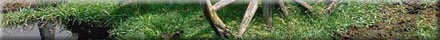
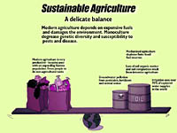

|

Within the span of the last two or three generations, agriculture in the developed world has changed drastically. From single farm operations that used significant manual labour, we are now moving towards huge corporate farms that are highly mechanized food machines. The driving force is maximum economic production i.e. profit. Government policies, in particular export subsidies, favour monoculture production (e.g. wheat). While these changes have reduced the risk of farming and have generally put money into farmer's pockets, the social and environmental costs have been substantial. The degradation and loss of top soil, draining and contamination of aquifers and the virtual elimination of small towns and their way of life has had a noticeable impact on society. The alternative is to develop an agriculture system that is sustainable. What is Sustainable Agriculture?
Sustainable agriculture is a concept that began to form in the 1970's following a number of publications that alerted the public to the dangers of modern farming systems (e.g. Rachel Carson's The Silent Spring that warned of toxic pesticides such as DDT). The public suddenly became aware of agriculture's impact on the environment and society. Now there is a growing movement among both scientists and the general public towards a goal of sustainable agriculture. There is no generally accepted definition of "sustainable sgriculture" It is a concept that involves four main issues:
|

{kind=link}